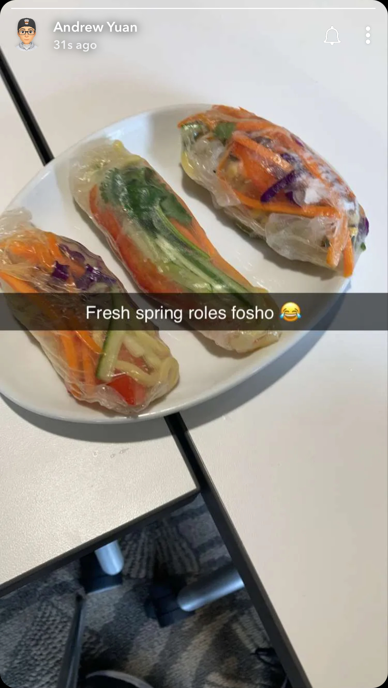

ingredieants for Spring Roll(春卷)
- Noodles
- Rice Paper
- Cucumbers
- Lettuce
- Purple cabbage
- Tomato
Steps to Make Spring Rolls(春卷)
- Dip rice paper into some water for 3-5 seconds.
- Add in the fillings of what you want on to the wet rice paper.
- Fold to hold the filling.
- Munch Time!
|

|